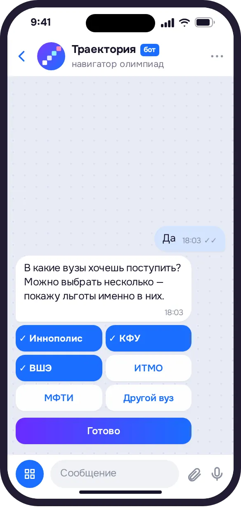
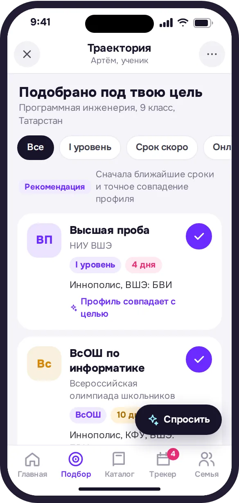
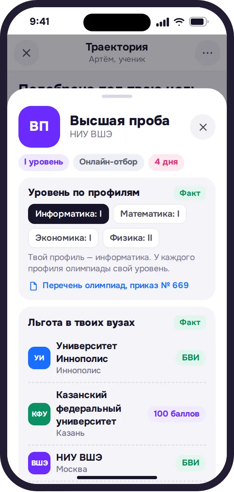
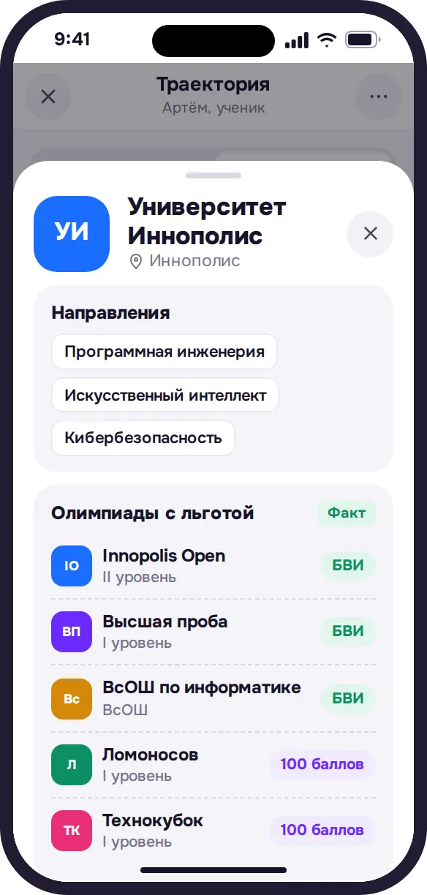
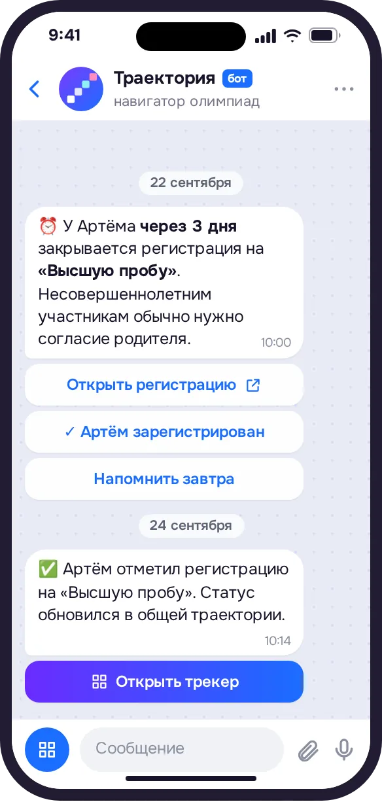

Олимпиада — короткий путь на бюджет. Только дорогу к нему никто не показывает
Льготы при поступлении дают ВсОШ и ещё 83 олимпиады из перечня. У одной «Высшей пробы» 25 профилей, и уровень у каждого свой. А льготу определяет вуз: какие олимпиады учесть, за какой класс, с каким баллом ЕГЭ, обычно от 75. Всё это разбросано по сотням сайтов, и о сроках никто не напоминает.
Перечень олимпиад школьников на 2025/26 учебный год, приказ Минобрнауки № 669
Три шага до своей подборки
-
Откройте бота в MAX
Кнопка «Открыть в MAX» ведёт прямо в чат. Ничего устанавливать не нужно.
-
Ответьте на пару вопросов
Класс, регион, любимые предметы, цель и вузы. Нет цели? Помогут три вопроса об интересах.

-
Получите подборку
3–5 олимпиад под цель, льготы в ваших вузах и напоминания о сроках прямо в чат.
Что умеет навигатор
Мини-приложение открывается поверх чата, и профиль в нём уже заполнен ответами из диалога.
3–5 олимпиад, и у каждой причина
Олимпиады из перечня и ВсОШ под цель ученика. Рядом видно, почему подходит: профиль совпадает с целью, уровень, льгота в выбранных вузах. Фильтры по уровню, скорому сроку и онлайн-отбору.

Льгота именно в ваших вузах
БВИ или 100 баллов в каждом вузе ученика, уровень конкретного профиля и условия: подтвердить ЕГЭ от 75 баллов, засчитают ли диплом 9 класса. У каждой льготы ссылка на правила приёма и дата проверки.

Ни одной пропущенной регистрации
Олимпиада попадает в трекер одной кнопкой. Напоминания приходят в чат MAX за месяц, неделю, три дня и накануне. Отметить регистрацию можно прямо из сообщения.
Помощник, который не выдумывает
Отвечает по карточкам олимпиад и вузов из базы и даёт ссылку на первоисточник. Если ответа в базе нет, так и скажет. У каждого участника свой чат, другие его не видят.
Все олимпиады и вузы под рукой
Каталог с поиском и фильтрами по предмету и городу. В карточке вуза видно, по каким олимпиадам туда поступают с льготой и какой нужен балл ЕГЭ.

Родитель предлагает, ученик решает

Каждому своим голосом
Школьнику бот пишет на «ты», родителю на «вы» и называет ребёнка по имени.
Одноразовые приглашения
Каждая ссылка срабатывает для одного человека. Приглашённому не нужно заново проходить онбординг.
Общие сроки
Напоминания приходят всем. Регистрацию может отметить любой, и напоминания о ней прекратятся у всех.
Не справочник, а навигатор
В каталоге олимпиад школьник ищет сам. Траектория сама подбирает олимпиады, показывает условия вузов этого ученика и напоминает о сроках.
Каталог олимпиад
- Олимпиады под цель ищете сами
- Условия вузов в десятках PDF
- Сроки держите в голове
- Родитель разбирается отдельно
Траектория
- Подборка под цель и вузы ученика
- Льгота в каждом вузе с источником
- Напоминания в чат MAX
- Одна траектория на семью
Каждый факт с источником
Данные берём из перечня олимпиад Минобрнауки, правил приёма вузов на 2026 год и сайтов олимпиад. Метка у каждого факта говорит, насколько ему можно доверять.
- Факт
- есть источник и дата проверки
- Рекомендация
- наш вывод из профиля ученика
- Демо-даты
- сроки ещё не опубликованы, это ориентир
- Данные уточняются
- источника пока нет, проверьте в правилах вуза
10 вузов в базе
- МГУМосква
- СПбГУСанкт-Петербург
- ВШЭМосква
- МФТИДолгопрудный
- ИТМОСанкт-Петербург
- НГУНовосибирск
- КФУКазань
- ИннополисИннополис
- СеченовскийМосква
- Казанский ГМУКазань
Частые вопросы
Нужно ли что-то устанавливать?
Нет. Бот и навигатор работают внутри MAX: достаточно открыть чат с ботом. Навигатор открывается поверх чата, профиль в нём уже заполнен ответами из диалога.
Что такое БВИ?
Зачисление без вступительных испытаний: с дипломом победителя или призёра можно поступить без конкурса по баллам ЕГЭ на направление, которое соответствует профилю олимпиады. Воспользоваться БВИ можно только в одном вузе и на одной программе.
Что значит «100 баллов»?
Диплом засчитывается как 100 баллов по вступительному испытанию того предмета, которому соответствует олимпиада. Остальные экзамены сдаются как обычно. В отличие от БВИ, эту льготу можно использовать в каждом вузе, куда ученик подаёт документы.
Нужно ли сдавать ЕГЭ, если есть диплом?
Да. Льготу по олимпиаде из перечня подтверждают результатом ЕГЭ по профильному предмету не ниже 75 баллов, а вуз вправе поставить порог выше. Если порог в вузе выше, это написано в карточке олимпиады под этим вузом.
Когда приходят напоминания?
В чат MAX за месяц, за неделю, за три дня и накануне срока, в 10:00 по времени региона. Какие из них присылать, настраивается командой /settings в чате бота.
Как подключить ребёнка или второго родителя?
Во вкладке «Семья» создайте ссылку-приглашение и отправьте её в MAX. По одной ссылке подключится один человек. Все участники видят одни и те же олимпиады и сроки, а олимпиады, которые предложил родитель, попадают в трекер после согласия ученика.
Как удалить данные?
Создатель траектории удаляет её вместе со всеми данными командой /delete в чате бота. Остальные участники могут просто выйти из траектории во вкладке «Семья».
Начните с одного сообщения
Откройте бота, ответьте на вопросы и получите олимпиады, которые ведут в ваши вузы.
Открыть в MAX